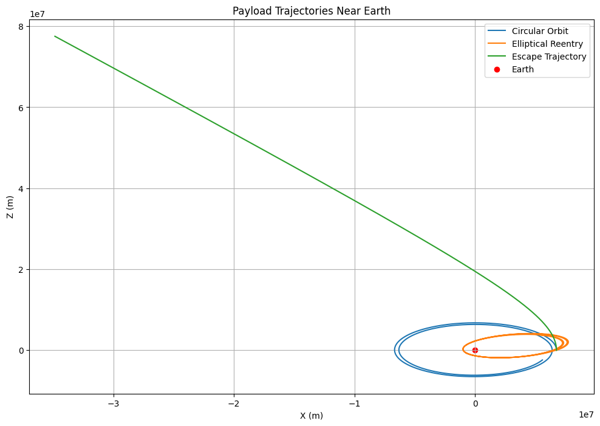
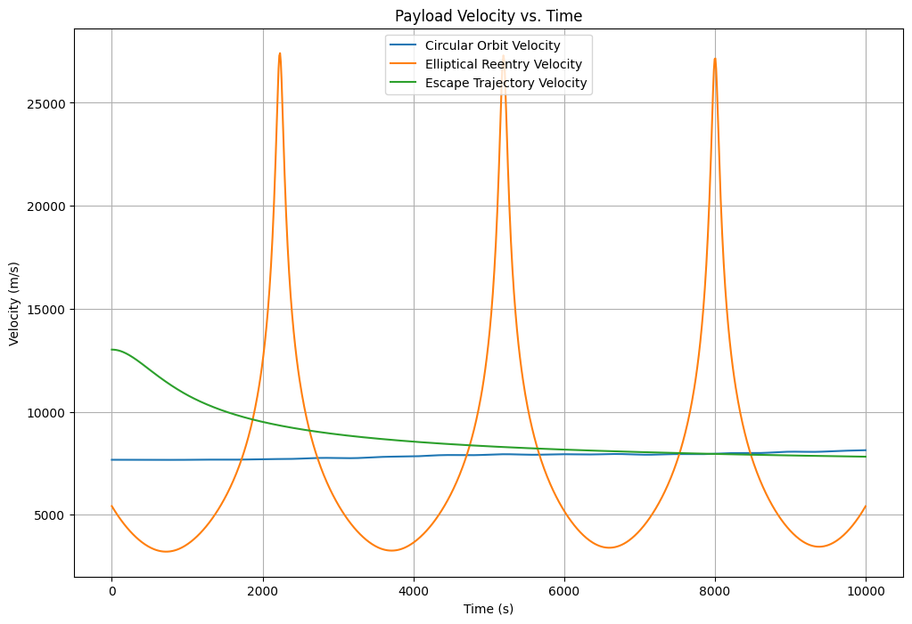
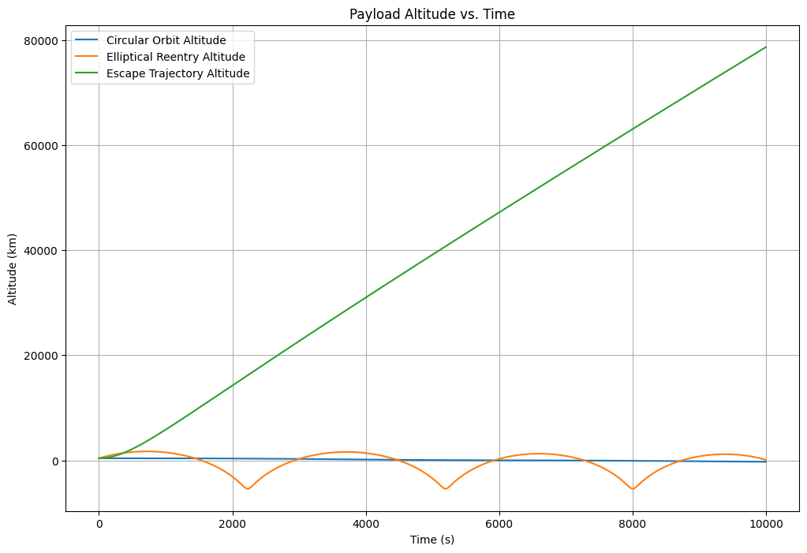

Problem 3: Trajectories of a Freely Released Payload Near Earth
1. Introduction
In this problem, we’ll analyze the motion of a payload released near Earth, focusing on the influence of Earth’s gravity on its trajectory. Depending on the velocity and direction of release, the trajectory could be:
- Elliptical: The object remains in orbit around the Earth.
- Parabolic: The object escapes Earth’s gravity but at exactly escape velocity.
- Hyperbolic: The object escapes Earth’s gravity with a velocity greater than the escape velocity.
We will model these trajectories using the two-body problem under Newton's law of gravitation and solve them numerically using Python.
2. Gravitational Dynamics and Equations of Motion
The gravitational force between Earth and the payload is given by Newton’s Law of Gravitation:
where:
- \(F\) is the gravitational force.
- \(G\) is the gravitational constant.
- \(M\) is the mass of Earth.
- \(m\) is the mass of the payload.
- \(r\) is the distance between the Earth and the payload.
This force results in a gravitational acceleration that affects the trajectory of the payload. We can model the motion of the payload with the following equations of motion:
Where:
- \(r\) is the radial distance.
- \(\ddot{r}\) is the acceleration.
We’ll break down the radial and angular components of motion and solve for the position and velocity of the payload over time using numerical integration.
3. Numerical Simulation
We'll use Euler's method or Runge-Kutta method to numerically solve the system of differential equations for the position and velocity of the payload. The system of equations to solve are:
Where \(x\) and \(y\) are the position coordinates of the payload in a 2D plane.
4. Initial Conditions and Setup
For our simulation, we’ll define the following initial conditions:
- The initial position of the payload relative to Earth (e.g., at some altitude).
- The initial velocity of the payload (e.g., tangential or radial).
- The initial angle of release.
We'll visualize the trajectories for different cases of initial velocities and directions (parabolic, elliptical, and hyperbolic).
5. Relativistic Equations of Motion (General Relativity Correction)
When velocities approach a significant fraction of the speed of light, we must modify Newtonian gravity using General Relativity corrections. The relativistic equation of motion for an object in Earth's gravitational field is:
\(\(\frac{d^2r}{dt^2} = -\frac{GM}{r^2} \left( 1 + \frac{3GM}{c^2 r} \right)\)\) where:
- \(c\) is the speed of light (3.0×108 m/s),
- \(GM\) is Earth's gravitational parameter. This additional term accounts for the relativistic time dilation and length contraction near strong gravitational fields.
## 6. Perturbation Due to Earth's Oblateness (J2 Effect) Since Earth is not a perfect sphere, higher-order gravitational terms introduce perturbations in the motion of the payload. The J2 perturbation effect modifies the acceleration as:
\(\(a_r = -\frac{GM}{r^2} \left[ 1 - \frac{3}{2} J_2 \left( \frac{R_E}{r} \right)^2 (1 - 3 \cos^2\theta) \right]\)\) where:
- \(J_2 \approx 1.08263 \times 10^{-3}\) is Earth's oblateness coefficient,
- \(R_E\) is the equatorial radius of Earth,
- \(\theta\) is the latitude. This effect causes a precession of satellite orbits, known as the J2-induced secular drift.
## 7. Three-Body Problem (Influence of Moon or Sun on the Payload) When a payload is released into space, its trajectory is not only influenced by Earth's gravity but also by other celestial bodies like the Moon or the Sun. In the restricted three-body problem, the equations of motion are:
\(\(\ddot{x} - 2\omega \dot{y} = \frac{\partial U}{\partial x}, \quad \ddot{y} + 2\omega \dot{x} = \frac{\partial U}{\partial y}, \quad \ddot{z} = \frac{\partial U}{\partial z}\)\) where:
- \(U\) is the effective potential: \(\(U = \frac{1}{2} \omega^2 (x^2 + y^2) + \frac{GM_1}{r_1} + \frac{GM_2}{r_2}\)\)
- \(M_1, M_2\) are the masses of Earth and the Moon (or Sun),
- \(r_1, r_2\) are the distances from the payload to each body. This equation governs Lagrange points, where the gravitational and centrifugal forces balance.
## 8. Atmospheric Drag and Reentry Dynamics For payloads re-entering Earth's atmosphere, we must consider aerodynamic drag. The equation of motion with drag force is:
\(\(m \frac{d\mathbf{v}}{dt} = -\frac{GMm}{r^2} + \frac{1}{2} C_D \rho A v^2\)\) where:
- \(C_D\) is the drag coefficient,
- \(\rho\) is the atmospheric density (which varies with altitude),
- \(A\) is the cross-sectional area. The drag force significantly reduces velocity and causes heat buildup during reentry.
## 9. Lorentz Force for Charged Payloads in Space If the payload is charged, it experiences an additional force due to Earth's magnetic field:
\(\(\mathbf{F} = q (\mathbf{E} + \mathbf{v} \times \mathbf{B})\)\) where:
- \(q\) is the charge of the payload,
- \(\mathbf{E}\) is the electric field,
- \(\mathbf{B}\) is Earth's magnetic field. This effect is crucial for spacecraft operating near planetary magnetospheres.
## 10. Non-Inertial Frame Corrections (Coriolis & Centrifugal Forces) When the payload is released from a moving spacecraft, we need to correct for non-inertial effects:
\(\(\mathbf{F}_{\text{non-inertial}} = -2m (\mathbf{\Omega} \times \mathbf{v}) - m \mathbf{\Omega} \times (\mathbf{\Omega} \times \mathbf{r})\)\) where:
- \(\mathbf{\Omega}\) is the rotational velocity of the spacecraft. These effects are critical for precise orbital insertions.
## 11. Non-Spherical Harmonics and Higher-Order Perturbations Beyond J2, Earth's gravitational field has higher-order harmonics (J3, J4, etc.) and tesseral harmonics (Cnm, Snm). These account for more subtle variations in Earth's gravity.
Generalized Gravitational Potential: \(\(U = \frac{GM}{r} \left[ 1 - \sum_{n=2}^{\infty} \sum_{m=0}^{n} \left( \frac{R_e}{r} \right)^n P_{nm}(\sin\phi) (C_{nm} \cos(m\lambda) + S_{nm} \sin(m\lambda)) \right]\)\) Where: * \(P_{nm}\) are associated Legendre polynomials. * \(C_{nm}\) and \(S_{nm}\) are spherical harmonic coefficients. * \(\lambda\) is the longitude.
12. Solar Radiation Pressure
For long-duration space missions, solar radiation pressure can significantly affect trajectories.
Solar Radiation Pressure Force: \(\(F_{rad} = \frac{P_{rad} A_{cr} (1+q)}{c}\)\) Where: * \(P_{rad}\) is the solar radiation pressure. * \(A_{cr}\) is the spacecraft's cross-sectional area. * \(q\) is the reflectivity coefficient. * \(c\) is the speed of light.
13. Payload Dynamics Near Earth: Trajectories, Velocity, and Altitude Over Time
import numpy as np
import matplotlib.pyplot as plt
from scipy.integrate import solve_ivp
# Constants
G = 6.67430e-11 # Gravitational constant (m^3 kg^-1 s^-2)
M_earth = 5.972e24 # Mass of Earth (kg)
R_earth = 6.371e6 # Radius of Earth (m)
# Equations of motion
def payload_trajectory(t, y):
x, vx, z, vz = y
r = np.sqrt(x**2 + z**2)
ax = -G * M_earth * x / r**3
az = -G * M_earth * z / r**3
return [vx, ax, vz, az]
# Initial conditions
altitude = 400e3 # 400 km altitude
r0 = R_earth + altitude
v_orbit = np.sqrt(G * M_earth / r0)
v_escape = np.sqrt(2 * G * M_earth / r0)
# Time span
time_span = [0, 10000]
time_points = np.linspace(time_span[0], time_span[1], 1000)
# Example 1: Circular orbit
initial_state_circular = [r0, 0, 0, v_orbit]
solution_circular = solve_ivp(payload_trajectory, time_span, initial_state_circular, t_eval=time_points)
# Example 2: Elliptical orbit (sub-orbital reentry)
initial_state_elliptical = [r0, 0.5 * v_orbit, 0, 0.5 * v_orbit]
solution_elliptical = solve_ivp(payload_trajectory, time_span, initial_state_elliptical, t_eval=time_points)
# Example 3: Escape trajectory (hyperbolic)
initial_state_escape = [r0, 0, 0, 1.2 * v_escape]
solution_escape = solve_ivp(payload_trajectory, time_span, initial_state_escape, t_eval=time_points)
# Plotting trajectories
plt.figure(figsize=(12, 8))
plt.plot(solution_circular.y[0], solution_circular.y[2], label='Circular Orbit')
plt.plot(solution_elliptical.y[0], solution_elliptical.y[2], label='Elliptical Reentry')
plt.plot(solution_escape.y[0], solution_escape.y[2], label='Escape Trajectory')
plt.scatter(0, 0, color='red', label='Earth')
plt.xlabel('X (m)')
plt.ylabel('Z (m)')
plt.title('Payload Trajectories Near Earth')
plt.legend()
plt.grid(True)
plt.show()
# Plotting velocity vs. time
plt.figure(figsize=(12, 8))
plt.plot(time_points, np.sqrt(solution_circular.y[1]**2 + solution_circular.y[3]**2), label='Circular Orbit Velocity')
plt.plot(time_points, np.sqrt(solution_elliptical.y[1]**2 + solution_elliptical.y[3]**2), label='Elliptical Reentry Velocity')
plt.plot(time_points, np.sqrt(solution_escape.y[1]**2 + solution_escape.y[3]**2), label='Escape Trajectory Velocity')
plt.xlabel('Time (s)')
plt.ylabel('Velocity (m/s)')
plt.title('Payload Velocity vs. Time')
plt.legend()
plt.grid(True)
plt.show()
# Plotting altitude vs. time
alt_circular = np.sqrt(solution_circular.y[0]**2 + solution_circular.y[2]**2) - R_earth
alt_elliptical = np.sqrt(solution_elliptical.y[0]**2 + solution_elliptical.y[2]**2) - R_earth
alt_escape = np.sqrt(solution_escape.y[0]**2 + solution_escape.y[2]**2) - R_earth
plt.figure(figsize=(12, 8))
plt.plot(time_points, alt_circular / 1000, label='Circular Orbit Altitude')
plt.plot(time_points, alt_elliptical / 1000, label='Elliptical Reentry Altitude')
plt.plot(time_points, alt_escape / 1000, label='Escape Trajectory Altitude')
plt.xlabel('Time (s)')
plt.ylabel('Altitude (km)')
plt.title('Payload Altitude vs. Time')
plt.legend()
plt.grid(True)
plt.show()


